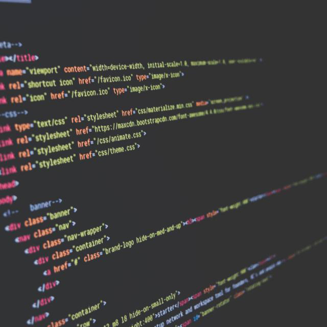

Why Wordpress?
If you want to manage your business using World's TOP CMS and make any changes in your website's content just in seconds, Landing Page based on Wordpress is a perfect choice for you!
Main benefits of migration on a Wordpress-based landing page are clear and simple
-
Wordpress is the most popular and easy-to-use content managment system
-

Using Wordpress you won't need to ask your web developer's help every time you want to make some changes in your site's content
-
If you already have a Wordpress site, you can make various different landing pages without affecting main design
How does it work?
-

Moving your landing page on Wordpress will not affect your main wordpress site's desing (if you already have one). It just makes a new page template, witch you may use every time you need to make a new landing page.
-

Having a wordpress landing page meens that you may add any change in your content just like making changes in ordinary wordpress post.
-

Every part of your landing page have a specified field in worpdress admin panel. So you just change those that need to be changed and press "Publish". Quick and Easy!
How much does it cost?
-
If you want to have your landing page running on Wordpress, you may order in right now. Price starts from just
-
49 USD
-
For this price you'll get the whole range of services connected with the migration from your existing HTML-site to a truly Wordpress.